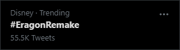

In a live stream today, Christopher gave us a cryptic update about the effects of the #EragonRemake tweet storm, and news that we might have our answer from Disney by the end of the year!
Have I had any traction with Eragon and Disney?
Oh, what a great question!
Remember I was telling you that there are those things that I can't talk about because my business partners would get mad at me? Well, that's one of those topics.
I think I can say this. I think I can say this. Those giant tweet storms that the fandom did actually made a difference. Now, whether or not this leads somewhere ultimately I don't know yet, but those tweet storms actually made a difference. So from me to you, all you Alagaësians out there, thank you. And I hope to have something to talk about in the near future.
Let's put it this way: I think I will have a definitive answer on a potential remake one way or another hopefully this year.
You know, personally, I feel like it's time. The film, believe it or not, came out, what, 16 years ago, give or take? And 2023 is going to be the 20th anniversary of the hardcover publication of Eragon. So, you know, the nostalgia fic factor is hitting right about now. Folks who were 16 when Eragon came out are mid thirties, late thirties, just like me. Some of them, you may have kids of your own. It's time! It's time to do it again! And hopefully do it well and have fun.
And heck, if the adaptation for To Sleep happens also, then that would be crazy cool. The only problem is I don't know where I'm going to get enough time to sleep and do all the writing I have to do. I'm just trying to average about 2,000 words a day, and that gets me a ton of stuff.
You can watch the clip or the entire live stream below.
Christopher Gives an Update on Eragon + Disney
Book Signing and Q&A - Watch the Full Live Stream
Don't forget we'll be running one final tweet storm next month. Find out more here!
Du Äfthringa Frethyaí, The Secret Storm, was a success! This one was completely organised by word of mouth, with no public announcement posts, and we still managed to reach trending for a few hours. Even Christopher was surprised - he found out just minutes before the scheduled starting time.
Ha! I just found out about this. Five minutes until another tweetstorm: #EragonRemakehttps://t.co/AhtOMimMpP
— Christopher Paolini (@paolini) July 25, 2021
These two successful tweet storms show Disney that we're truly committed and passionate. Du Äfthringa Frethyaí is especially noteworthy as it demonstrates a lot more organic growth than the first tweet storm, which was planned weeks in advance. Browsing the list of latest tweets, one can see that many of the participants had no idea #EragonRemake was a thing at all!
Sources say it's even harder to get an already-trended hashtag trending a second time, so this was an amazing achievement.
Just like last time, the fanart blew us all away and revealed just how talented this community is.
I didn't intend to stream during Du Äfthringa Frethyaí, but by popular request, I did just that. I was first joined by some members of the Arcaena MCAlagaesia Discord server, and then later hosted a Q&A session with Christopher Paolini alongside Maxime Bocquier (@MaxBConceptArt) and Malte Wegmann (@dnbnumbra). You can watch that here!
Thanks for participating once again!
Last week, tens of thousands of Inheritance Cycle fans took to Twitter calling on Disney to show the studio the enormous demand for an #EragonRemake. The results were beyond all expectations I had for the event. When the hashtag last trended, it had over 55,500 tweets - but they're still coming in over a week after, so the true number could be way higher.

Not only were these numbers far larger than I had even hoped possible, the community was also amazingly creative with their tweets. Endless memes, fanart, music, discussions and debates filled our timelines for days.
There are many people I need to thank for making this idea so much more than I could have by myself.
The reaction and result were orders of magnitude beyond anything I expected. Christopher even expressed the same astonishment. You have made this impossible for Disney to ignore. Your contribution has had and will continue to have an amazing impact on the fandom, even beyond a potential new adaptation. Thanks for joining me and making this idea so successful!
~ Jack / Hellomynameis99
This was like a giant, giant present from the fandom and it's going to really move things forward.
My team and I have just been absolutely blown away by the responses here, and the memes that are still coming through! The memes really just make it worthwhile.
We made some serious progress today. Thank you to everyone listening, you all did amazing. Go forth, be awesome, and I'll be around.
Looking for something to do? Check out these videos.
Official #EragonRemake live stream archive
I was streaming and commentating the entire event with a live feed of all the #EragonRemake tweets as they came in for almost eleven hours.
I was lucky enough to be joined by Christopher Paolini to chat for a few hours, as well as Malte Wegmann and Maxime Bocquier who created the official theme and artwork for #EragonRemake respectively.
Listen to the official #EragonRemake music
Bring the Thunder is the official theme of the #EragonRemake tweet storm composed by Malte Wegmann featuring Salomé "Lune" Hanlon. The artwork featured in the background was created by the talented concept artist Maxime Bocquier.
I had the honour of writing the lyrics sung by Salomé to tell the story of the fandom's previous experience with a big-screen adaptation and our hope for the future.
The #EragonRemake tweet storm has been covered by several news outlets and blogs. This all goes to show that the reach of the tweet storm broke the Twitter bubble and has been seen by the wider internet - it has become impossible for Disney to miss.
Read their articles below!
Eragon Author Urges Fans to Ask Disney for a Proper Adaptation - screenrant.com
Disney Plus remake of Eragon is trending, author chimes in - cnet.com
#EragonRemake Trending on Twitter. Could It Happen? - insidethemagic.net
'Eragon' Author Speaks out on Movie Remake Demands From Fans - popculture.com
“Eragon” Twitter Storm Hopes to Grab Disney Attention - mickeyblog.com
An Eragon TV show on Disney Plus? Christopher Paolini wants it to happen. - comicbook.com
#EragonRemake: Author and Fans Roar for New Eragon Adaptation From Disney - comicbook.com
Everyone Really Wants an 'Eragon' Remake From Disney Plus, but Is It Happening? - Distractify.com
‘Eragon’ Author Encourages Fans to Push Disney for a ‘Proper’ Adaptation - thewrap.com
'Eragon' Author Christopher Paolini Is Totally On Board For A Remake On Disney+ - thethings.com
#EragonRemake trends worldwide as Christopher Paolini leads fans in demanding a series from Disney+ - sportsskeeda.com
Eragon Remake Trending Worldwide As Fans Rally With Author Christopher Paolini - maxblizz.com
Help encourage Disney to create a new Eragon movie or television show! - shurtugal.com
‘Eragon’ Fans Launch Campaign For New Adaptation - nerdsandbeyond.com
Disney has remade ‘Eragon’: Reminisce about the original movie - filmdaily.co
Christopher Paolini Wants Remake of ‘Eragon’ Film - kirkusreviews.com
#EragonRemake Trends as Eragon Fans Bombard Disney for a New Adaptation - movieweb.com
This is just a tiny selection of the tweets we saw during the tweet storm, showcasing great debates and ideas, memes, and amazing artwork from the community that truly made the tweet storm not just a call to Disney for an adaptation, but an event to remember for any fan.
The tweet storm hashtag is #EragonRemake! Make sure you let @Disney and @DisneyPlus know how much you want to see the Inheritance Cycle by @Paolini properly adapted on screen! pic.twitter.com/WdhGAbAF3l
— MCAlagaesia (@MCAlagaesia) June 20, 2021
My first tweet - when we had no idea how big #EragonRemake would become!
Bring the thunder Alagaësians! Let @Disney hear you roar! Use the hashtag #EragonRemake, mention @Disney in the body of the tweet, and let them know we want to see a proper Eragon adaptation!
— Christopher Paolini (@paolini) June 20, 2021
.
More info here: https://t.co/smmYs9ufPY
.
Music by @dnbnumbra pic.twitter.com/igAv0SeMX1
Christopher's first tweet, sharing the official theme of #EragonRemake (Shortened Version).
Bring the Thunder! #EragonRemake
— Malte Wegmann (@dnbnumbra) June 20, 2021
Listen here: https://t.co/HLQVCD2K96 https://t.co/OjhRPYGS3v
Malte Wegmann sharing their full-length official soundtrack of the #EragonRemake tweet storm, Bring the Thunder, on YouTube.
(1/2) "Arya's Test"
— Maxime Bocquier - Concept Artist (@MaxBConceptArt) June 20, 2021
Happy to finally post this! Who else would like to see a GOOD Eragon series adaptation? @disneyplus
Hope you like it @paolini !#eragonremake pic.twitter.com/wS46F9kUln
Maxime Bocquier sharing their concept art, Arya's Test, companion to the official soundtrack.
PICTURE THIS: It's 2023, a cold winters night, and you're about to watch the best show you've ever seen because @Disney decided to do the #EragonRemake pic.twitter.com/T7CMh1mDKB
— David Ballin (@DavidBallin1) June 20, 2021
David Ballin sharing their mock-up of the Disney Plus website with an Eragon series.
54k tweets! Amazing that it's held for so long! #EragonRemake @Disney https://t.co/tpsJ0Wa4yg
— Christopher Paolini (@paolini) June 21, 2021
One of the last reported milestones (although we did confirm 55.5k tweets before #EragonRemake stopped trending!)
Yes! @Paolini's humour is amazing! You should hear the jokes and memes we're making!https://t.co/YyO1fkXnl1 https://t.co/vo8gZmhcEW
— MCAlagaesia (@MCAlagaesia) June 20, 2021
Sharing the Eragon movie memes from the tweet storm media page.
MAKE IT HAPPEN #EragonRemake @Disney @paolini pic.twitter.com/x2RRSoXGKs
— a.j. wolfe (@ajwolfewrites) June 21, 2021
a.j. wolfe's TED Talk about adapting Eragon as a TV series.
Another oldie, The Blessing of Elva. I would love to repaint this scene. I think i could do it more justice now. Still, i like this one too. I could see this scene being one of the most iconic moments in the first season of a @disney + show. Hint hint wink wink! Lets go @paolini! pic.twitter.com/q94LEbJJhZ
— Fish | Concept Artist (@MyFishFillet) June 20, 2021
Fish's concept art of the blessing of Elva is exactly how I imagined it!
When Eragon finds the egg in the forest. Another oldie. #EragonRemake really would love it if @Disney picked up this property and made a show for Disney+! @paolini lets get it!! pic.twitter.com/IZ5qU7dSsi
— Fish | Concept Artist (@MyFishFillet) June 20, 2021
More concept art by MyFishFillet, this one depicting the scene when Eragon discovers Saphira's egg.
I can participate with snacks 😆 #EragonRemake pic.twitter.com/e4aXOGe0jS
— Heiress of Random Apocalypse (@KatieWyRa) June 20, 2021
Fans found endless ways to participate. KatieWyRa created the hashtag with pretzels!
Well, since we're at it, I always wondered what you thought of my interpretation of the characters and environments @paolini ? What would you change?
— Maxime Bocquier - Concept Artist (@MaxBConceptArt) June 20, 2021
Be honest! ;)#EragonRemake pic.twitter.com/Y8eKxgKsLP
Maxime Bocquier shared concept art for dozens of scenes and characters throughout the event in addition to the official piece titled "Arya's Test".
Completed work! we hope u like it please share n show some love on my dad’s ig https://t.co/Rutq86ZbZk
— Derek (@Im_a_misfit_) June 20, 2021
we really need a new eragon adaptation #EragonRemake @paolini @disneyplus pic.twitter.com/zmwoGPbBr7
Derek's dad, a plasticine sculptor, created Saphira for the #EragonRemake tweet storm.
On #FathersDay2021 let @Disney think about the compelling father figures @paolini gave us in the series: badass Brom, single widower father Ajihad, Roran the ultimate fighter, Horst, adoptive father Hrothgar... and Eragon's mentor Oromis... So much material for an #EragonRemake ! pic.twitter.com/fQNHJEgQx1
— Zoe Francescutto (@zoefrancescutto) June 20, 2021
The tweet storm coincided with Father's Day in the US. Many #EragonRemake tweets also used the hashtag #BigBromEnergy to honour the father figures in the Inheritance Cycle and in our own lives.
Number 5 for #EragonRemake! Those are rookie numbers! @paolini @Disney pic.twitter.com/opQn6w8zoR
— TJ Platt (@silver_sledder) June 20, 2021
The #EragonRemake hashtag started trending mere minutes into the event, and remained there in many locations for hours.
First time trying a creative look (so not the best), but wanting an #EragonRemake made me wanna try Saphira’s wing on my eye!
— Summer (@frostedtigermua) June 20, 2021
Thank you @paolini for an amazing series and I want to see a new Eragon so bad! Let’s hope Disney does the entire inheritance cycle too! pic.twitter.com/omhUBZdOdW
Summer created this beautiful makeup art for the #EragonRemake.
When someone who hasn’t read the books watches the movie and talks to the fans of @paolini’s Inheritance cycle. @Disney @disneyplus #EragonRemake pic.twitter.com/RqVEdFgn6m
— LightWolf-Moon Moon (@LightwolfM) June 20, 2021
The #EragonRemake memes came from all corners of pop culture.
We're here to make some noise and voice our need of an #EragonRemake @paolini @Disney @disneyplus pic.twitter.com/bzjDvnF6fE
— Henry Holler (@9slayer7) June 20, 2021
No reference or meme format was safe from #EragonRemake
Reason number 5738 why @disneyplus should do an #EragonRemake. Girls and women WANT and NEED meaningful representation and models in media, and @paolini did it wonderfully: Arya, Nasuada, Katrina, Angela, Elva, Islanzadi, Elain, Gertrude, Birgit...All strong & different & SO cool pic.twitter.com/sBc2HzzjzM
— Zoe Francescutto (@zoefrancescutto) June 20, 2021
Many fans want an #EragonRemake because of the Inheritance Cycle's meaningful representation and role models, which something Disney would be very interested in.
Murtagh is one of the most complex and well written charcters I have seen in a book in a long time and I hope @Disney will see how badly we need a remake so he will have the justice he deserves. @paolini #eragonremake pic.twitter.com/S1lrstn9CA
— Dani D (@danielleyd22) June 20, 2021
Many fans want an #EragonRemake because of the detailed and complex characters with intricate arcs and stories.
An old sketch of Fírnen that i never posted but I think thats the perfect timing for it rn :D #EragonRemake @paolini @Disney pic.twitter.com/IXBEr9mpb4
— 🐺Rudzik🐺(Commissions OPEN) (@Rudzikfa) June 20, 2021
The #EragonRemake tweet storm was the place to be for fans of fanart, with many artists releasing never-before-seen works just for the event.
Christopher's favourite location in @MCAlagaesia needs to be done justice in an #EragonRemake! @Disney
— MCAlagaesia (@MCAlagaesia) June 20, 2021
"It was so close to what I had in my mind that it was almost like a waking dream" ~@paolini pic.twitter.com/45JMvaRjJt
I shared some of the locations the MCAlagaësia team have been working on over the past few years.
We need Angela scenes being a badass at the bigscreen, she is breathtaking, and yes I simp her, I won't hide myself #EragonRemake @paolini @disneyplus @Disney @DisneyPlusES pic.twitter.com/fCP4AQKDSR
— Ashana (@anabrownie15) June 20, 2021
Thousands of fans shared their favourite characters they want to see done justice in an #EragonRemake.
#EragonRemake @Disney @paolini Finally got my very first tattoo for my 30th birthday this month. It was no question that my favorite series would be forever inked on my skin! @timelessatl Art by Andrew Snowden. pic.twitter.com/Hz1amODm49
— MotherOfPugs (@MotherOfPugs28) June 20, 2021
The fanart wasn't limited to the mediums of digital or paper - some dedicated fans rolled up their sleeves to show off their Inheritance Cycle tattoos!
Disney Plus remake of Eragon is trending, author chimes in https://t.co/dcNfhDNst0
— CNET (@CNET) June 21, 2021
The media coverage was huge, with more than 30 news sites covering the event on the day alone, and probably a lot more that I've missed since!
Huge, huge thanks to everyone participating in the #EragonRemake tweetstorm. Can't tell you what it means to me and the rest of the fandom. Your enthusiasm today has totally blown me away. Atra esterní ono thelduin! @Disney https://t.co/a9fET85JNZ
— Christopher Paolini (@paolini) June 20, 2021
Christopher's heartfelt thanks to the community for organising and participating in the tweet storm.
Browse more tweets with the #EragonRemake hashtag.